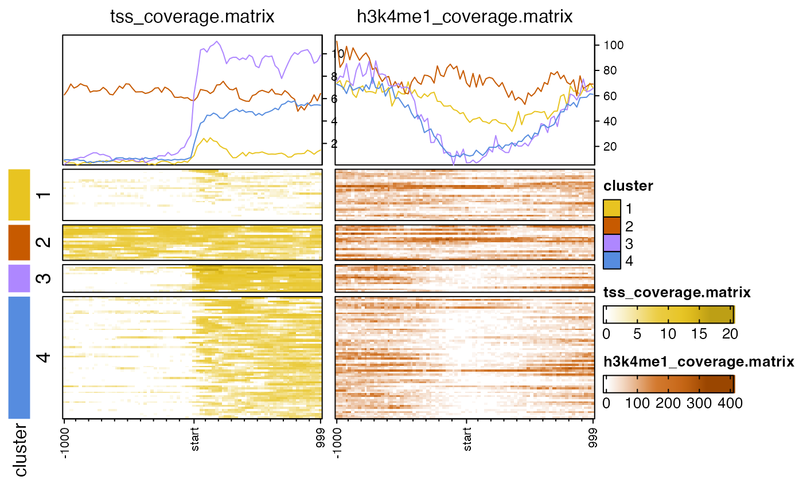

Make multiple coverage heatmaps
nmatlist2heatmaps(nmatlist, k_clusters = 0, k_subset = NULL, k_colors = NULL, k_width = unit(3, "mm"), partition = NULL, rows = NULL, nmat_colors = NULL, main_heatmap = 1, hm_nrow = 1, transform = jamba::log2signed, lens = -2, seed = 123, use_raster = TRUE, verbose = FALSE, ...)
Arguments
| nmatlist |
|
|---|---|
| k_clusters | integer number of k-means clusters to
use to partition each heatmap. Use |
| k_subset | integer vector of k-means clusters to retain. Often one cluster contains mostly empty values, and can be removed using this mechanism. |
| k_colors | vector of R colors, or |
| k_width | unit width of the k-means cluster color
bar, used with |
| partition | vector used to split rows of each
matrix in |
| rows | vector of |
| nmat_colors | named character vector of R colors,
to colorize each heatmap. When |
| main_heatmap | integer index referring to the
entry in |
| hm_nrow | integer number of rows used to display the heatmap panels. |
| transform |
|
| lens | numeric value used to scale each heatmap
color ramp, using |
| seed | numeric value used with |
| use_raster | logical indicating whether to create heatmaps
using raster resizing, almost always recommended |
| verbose | logical indicating whether to print verbose output. |
| ... | additional arguments are sent to |
Details
This function takes a list of normalizedMatrix objects,
usually the output of coverage_matrix2nmat(), and
produces multiple heatmaps using
EnrichedHeatmap.
This function is intended to be a convenient wrapper to help keep each data matrix in order, to apply consistent clustering and filtering across all data matrices, and to enable optional multi-row heatmap layout.
Examples
## There is a small example file to use for testing cov_file1 <- system.file("data", "tss_coverage.matrix", package="platjam"); cov_file2 <- system.file("data", "h3k4me1_coverage.matrix", package="platjam"); cov_files <- c(cov_file1, cov_file2); names(cov_files) <- gsub("[.]matrix", "", basename(cov_files)); nmatlist <- lapply(cov_files, coverage_matrix2nmat); nmatlist2heatmaps(nmatlist);# k-means clusters nmatlist2heatmaps(nmatlist, k_clusters=4);# multiple rows nmatlist2heatmaps(nmatlist, k_clusters=4, hm_nrow=2);